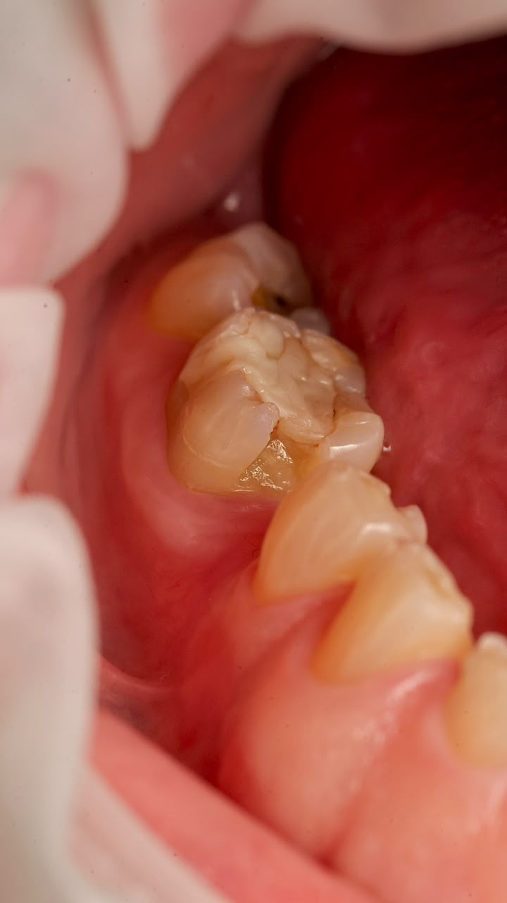
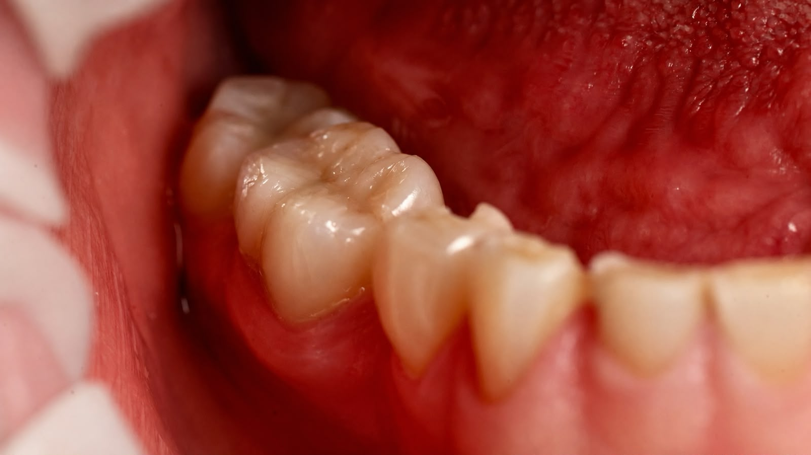

Antes
Caso Inicial

AntesSou dentista e acredito que a odontologia vai muito além de cuidar de sorrisos. Meu trabalho é unir conhecimento, técnica e sensibilidade para oferecer um atendimento personalizado, valorizando a saúde, a estética e a individualidade de cada paciente.
Busco proporcionar uma experiência acolhedora, baseada na confiança, na transparência e na excelência, respeitando a história e as necessidades de cada pessoa. Para mim, cada sorriso é único e merece um cuidado que valorize sua beleza natural e seu bem-estar.
Resultados reais e transformações de casos clínicos realizados pelo Dr. Pedro Henrique. Precisão, anatomia natural e excelência em cada detalhe.

Antes
DepoisAqui você encontra um atendimento de qualidade, um ambiente acolhedor e, principalmente, resultados que tragam segurança e confiança para o seu sorriso.
Na Innovare, unimos tecnologia e um atendimento acolhedor para oferecer a melhor experiência ao paciente.
Aqui você encontra um atendimento de qualidade, um ambiente acolhedor e, principalmente, resultados que tragam segurança e confiança para o seu sorriso.
Aqui, você é atendido da melhor forma, com conforto, cuidado e
praticidade em cada detalhe.
.png)
O ideal é visitar o dentista a cada 6 meses para consultas de rotina e limpeza profissional. Porém, dependendo da sua saúde bucal, seu dentista pode indicar intervalos diferentes.
Quando realizado com acompanhamento profissional, o clareamento é seguro. Pode causar sensibilidade temporária, que desaparece após o tratamento.
O implante é uma raiz artificial fixada no osso, sobre a qual é colocada uma coroa. A prótese pode ser fixa ou removível e apoia-se nos dentes ou no osso. O dentista indica a melhor opção para cada caso.
São finas lâminas de porcelana ou resina coladas na frente dos dentes, corrigindo cor, forma e tamanho. É um procedimento minimamente invasivo e com resultados estéticos excelentes.
Depende da complexidade do caso, mas em geral varia de 12 a 36 meses. O aparelho transparente (alinhadores) pode ser mais rápido em casos simples.
Tem mais dúvidas? Agende uma consulta!